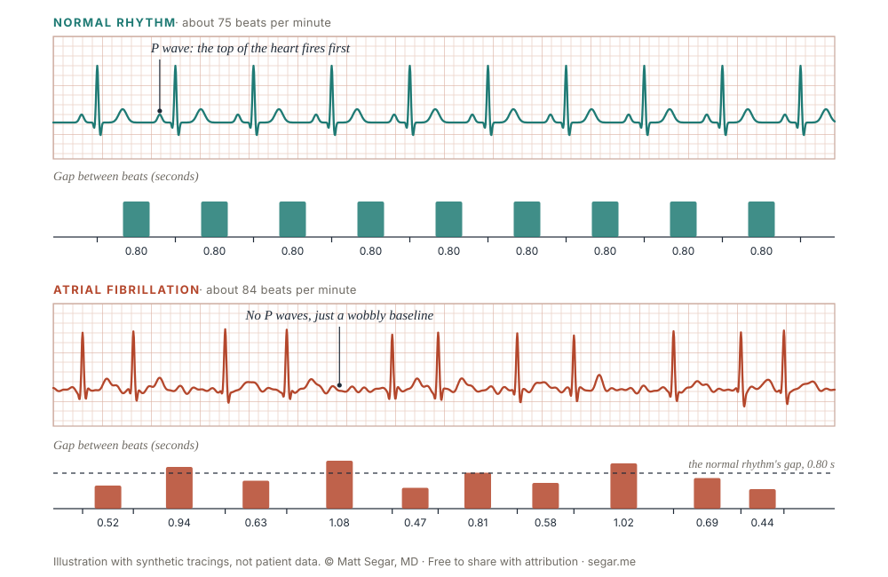

Apple Watch AFib Alert? What It Means and What to Do Next
Need an appointment? Call Carmel (317) 338-6666 or New Castle (765) 521-1461. Emergency: call 911.
Your watch noticed a pulse pattern that might be atrial fibrillation (AFib). An alert is a warning, not a diagnosis. A doctor confirms AFib by looking at an ECG. Call 911 for chest pain, fainting, severe trouble breathing, or stroke signs. If you feel okay, save your watch data and book a visit within a week or two.
When to call 911 instead
Do not wait for an appointment if you have:
- Chest pain or pressure
- Severe shortness of breath
- Fainting or nearly fainting
- A very fast heartbeat that won't settle, with dizziness or trouble breathing
- Stroke signs (BE FAST): loss of Balance, trouble with the Eyes, Face drooping, Arm weakness, Speech trouble. Time to call 911.
The watch alert cannot detect a heart attack or a stroke. If you feel any of these, call 911 even if your watch shows nothing.
What the alert means
Your Apple Watch shines a green light into your wrist and tracks the pulse in your blood flow. When you sit still, it times the gaps between beats. If it sees an irregular pattern several times, it sends an irregular rhythm notification. Other brands, such as Fitbit, Pixel, and Samsung, use their own methods.
AFib is a common heart rhythm problem. The top chambers of the heart quiver instead of squeezing normally. It can make your pulse fast and irregular, or it can cause no symptoms at all.

How accurate are alerts?
Three large studies tested watch alerts against an ECG patch, a sticker monitor that records every heartbeat.
| Study | Who took part | What it found |
|---|---|---|
| Apple Heart Study (2019) | 419,297 adults with no known AFib | 0.52% got an alert over about 4 months. Of 450 who then wore a patch, 34% had AFib on it. When an alert went off while the patch was recording, AFib showed up 84% of the time. |
| Apple's FDA study of the current feature | 573 adults, some with known AFib, wearing a watch and a patch for up to 13 days | The watch alerted in 124 of 140 people who had AFib (88.6%). It stayed quiet in 290 of 292 people who did not (99.3%). |
| Fitbit Heart Study (2022) | 455,699 adults with no known AFib | 1% got an alert. Of 1,057 who then wore a patch, 32% had AFib on it. When an alert went off while the patch was recording, AFib showed up 98% of the time (221 of 225). |
Why did only about one in three people have AFib on the patch? In the Apple Heart Study, the patch went on about 13 days after the alert on average, and AFib often comes and goes. A week of patch recording can miss it. When the alert and the patch overlapped, the alert was usually right.
These studies used different devices and designs, so the numbers do not transfer from one watch to another. The Apple FDA study included people who already had AFib, so its numbers do not tell you the chance that your own alert is real.
What the alert can't do
- It doesn't watch you all the time. The feature checks your pulse now and then, mostly when you are still. Apple says people with AFib may never get an alert.
- It doesn't detect heart attacks or strokes. Call 911 for chest pain or stroke signs, whatever your watch says.
- It isn't for everyone. Apple did not design it for people under 22 or for people already diagnosed with AFib.
- It is a different alert from the others. High heart rate and high blood pressure (hypertension) notifications measure other things. This page covers irregular rhythm notifications.
Your watch ECG result
If you have an Apple Watch Series 4 or later (not SE), you can record a 30-second single-lead ECG. Open the ECG app and hold your finger on the crown. The app gives one of these results:
- Sinus rhythm: a regular pattern. One normal strip doesn't rule out AFib that comes and goes.
- Atrial fibrillation: an irregular pattern that looks like AFib. Bring it to your visit.
- Low or high heart rate: your heart rate was too slow or too fast for the app to check for AFib.
- Inconclusive: the app couldn't classify the recording. Extra beats, other rhythm problems, or a pacemaker can cause this.
- Poor recording: too much noise to read. Rest your arm on a table and try again.
Whatever the label says, I read the tracing itself. Save every strip, especially ones you took during symptoms. Here is how to export them as a PDF.
Already diagnosed with AFib?
Apple's irregular rhythm alerts aren't designed for you. Turn on AFib History in the Health app instead. Each week it estimates the share of time your heart showed signs of AFib, sometimes called your AFib burden. To get steady estimates, you need to wear the watch at least 12 hours a day, 5 days a week. A rising number can tell us your treatment needs a change.
Why it matters
AFib can let blood pool in the heart and form clots. A clot that travels to the brain causes a stroke. Treatment can often prevent strokes from AFib, but only once we know you have it. An alert is worth a visit even if you feel fine.
What to do now
- Stay calm. An alert is not an emergency if you feel okay.
- Save the evidence. Take a screenshot of the alert. If your watch has the ECG app, record an ECG while you have symptoms, and again later when you feel normal.
- Write down what you notice. Note the date, time, what you were doing, and any symptoms like a racing heart, dizziness, or tiredness.
- Keep taking your usual medicines. Do not stop or start anything without talking to your doctor.
- Schedule a visit within a week or two. Tell the office you had an Apple Watch AFib alert.
What happens at the visit
- A 12-lead ECG in the office.
- A look at your history, medicines, blood pressure, and risk factors such as sleep apnea, alcohol, thyroid disease, and heart disease.
- Often a wearable heart monitor for one to several weeks, if the ECG is normal but the alert was real or repeated.
- Sometimes an ultrasound of the heart (echocardiogram) and blood tests.
If we confirm AFib, we decide together about stroke prevention, controlling symptoms, and whether a procedure like ablation makes sense. Stroke prevention starts with your CHA₂DS₂-VASc score, which counts risk factors such as age, high blood pressure, diabetes, and prior stroke. You can read more in my AFib overview.
Common questions
Can a smartwatch diagnose AFib?
The pulse alert can't. It only flags a pattern that might be AFib. The watch ECG app is different: it records a real 30-second tracing, and a doctor who looks at that tracing can sometimes confirm AFib from it. Often we still want a 12-lead ECG or a heart monitor.
My watch never alerted me. Does that mean I don't have AFib?
No. The watch checks your pulse now and then, mostly when you sit still. Apple says the feature cannot detect every episode and that people with AFib may never get an alert. If you feel a racing, pounding, or fluttering heartbeat, get checked anyway.
Can I get a false alert?
Yes. Motion, a loose band, cold hands, dark wrist tattoos, and extra heartbeats (PVCs and PACs) can all fool the pulse sensor. I want to see a recorded rhythm before I call it AFib.
My watch ECG says Inconclusive. What now?
The app couldn't sort the recording into a category. Rest your arm on a table, hold still, and try again. Extra beats, other rhythm problems, and pacemakers can also cause this result. Save the strips and bring them to your visit, because I can still read them.
I already have AFib. Should I keep irregular rhythm alerts on?
Apple did not design the alerts for people already diagnosed with AFib. Turn on AFib History instead. It estimates the share of each week you spent in AFib, which helps us judge how well treatment works. Apple turns the alerts off when you set it up.
Does an alert mean I need a blood thinner?
Not by itself. First we confirm AFib on an ECG. Then we look at your stroke risk, using a score called CHA₂DS₂-VASc, and weigh it against your bleeding risk. If you already take a blood thinner, keep taking it until we talk. If you don't, do not start one because of an alert.
How quickly do I need to be seen?
If you feel well, aim for a visit within a week or two. Call sooner if alerts keep coming or you develop symptoms. Go to the emergency room for the warning signs listed above.
Make an appointment
I see patients with heart rhythm problems at Ascension Medical Group St. Vincent in Carmel and New Castle, Indiana. To schedule, use my Ascension page or call the office.
- Carmel Heart Care: (317) 338-6666
- New Castle Heart Care: (765) 521-1461
References
- Perez MV, et al. Large-scale assessment of a smartwatch to identify atrial fibrillation. N Engl J Med. 2019;381:1909-1917. doi:10.1056/NEJMoa1901183
- Lubitz SA, et al. Detection of atrial fibrillation in a large population using wearable devices: the Fitbit Heart Study. Circulation. 2022;146:1415-1424. doi:10.1161/CIRCULATIONAHA.122.060291
- Apple Inc. Irregular Rhythm Notification Feature 2.0: Instructions for Use. apple.com
- Apple Support. Take an ECG with the ECG app on Apple Watch. support.apple.com/120278
- Apple Support. Track your AFib History with Apple Watch. support.apple.com/108375
- Joglar JA, et al. 2023 ACC/AHA/ACCP/HRS guideline for the diagnosis and management of atrial fibrillation. Circulation. 2024;149:e1-e156. doi:10.1161/CIR.0000000000001193
This page is general education, not medical advice, and does not create a doctor-patient relationship. It cannot replace an exam or an ECG. If you think you are having an emergency, call 911. This is my personal website, and the views here are my own. I also build health technology products, which are not promoted on this page.